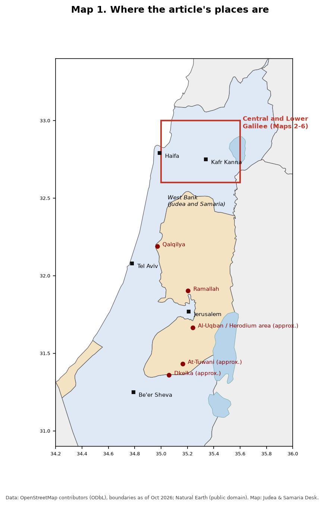
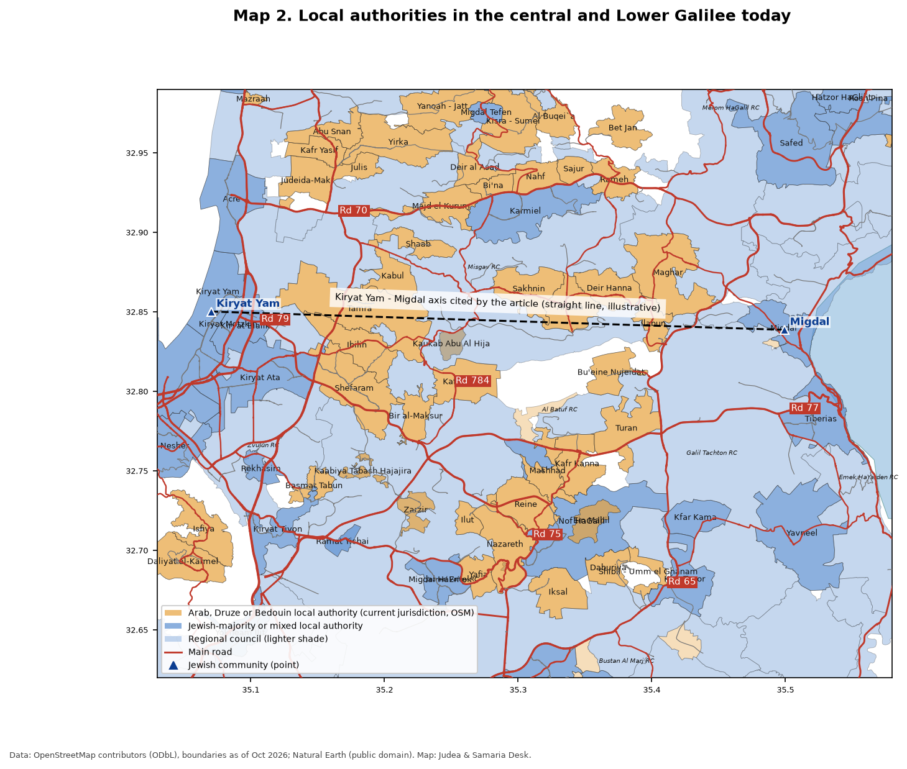
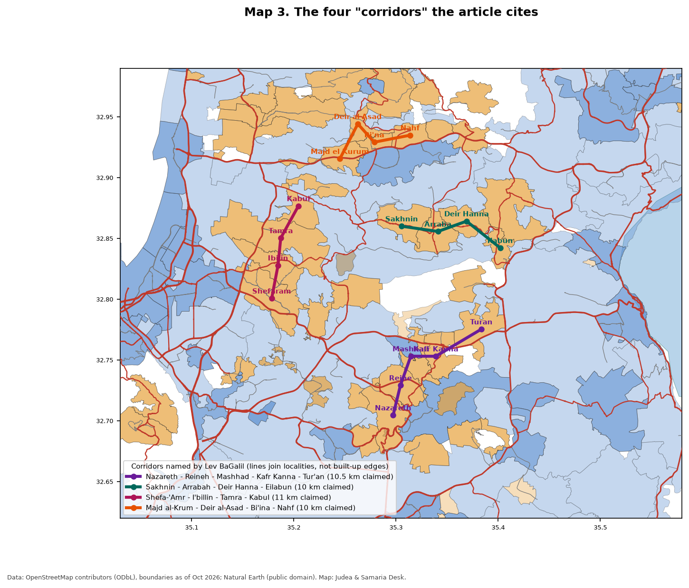
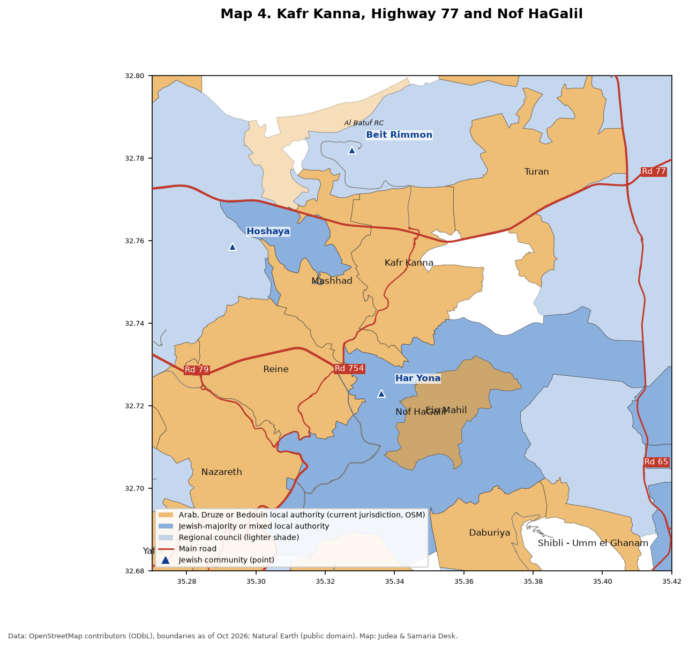
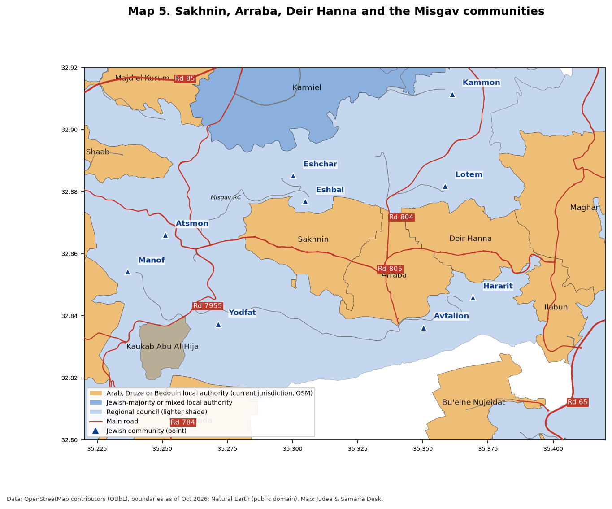
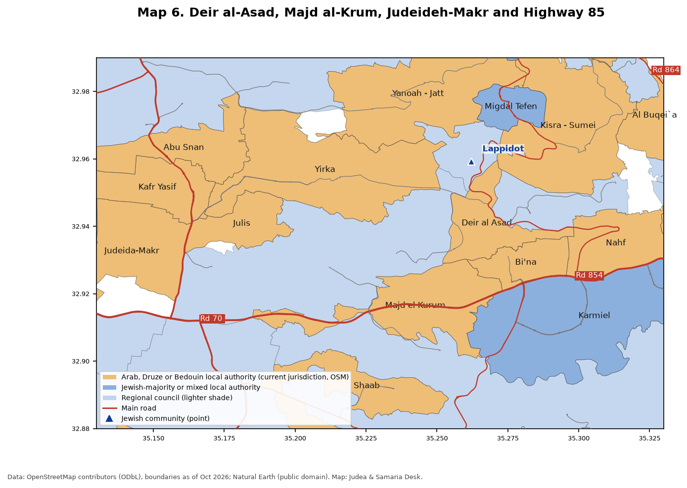

The "Khamaisi Plan": planning, land and contiguity in the Galilee
Prepared October 21, 2026 (Israel time, UTC+3). Items marked unconfirmed rest on a single source. Statements by the investigation, by Prof. Khamaisi, and by planning bodies are each labeled as that party's claim. Numbers in square brackets refer to the Sources list.
Key points
"The Khamaisi Plan" is not a single statutory plan. It is the name that the Israeli outlet HaKol HaYehudi gave to an investigation, published October 4, 2026, about Prof. Rassem Khamaisi, an Arab Israeli urban planner from Kafr Kanna [1][2]. The investigation says that his public writings since 2017 set out a strategy, and that dozens of local master plans in the Galilee carry it out [1].
The investigation's central claim is that approved and pending plans for Arab towns in the Galilee create nearly continuous Arab built-up "corridors" that surround small Jewish communities and sit on main roads, and that this is a security risk in a war or in riots like those of May 2021 [1]. The investigation was also published in Makor Rishon under Kalman Liebskind's name, according to a summary on the Rotter forum (unconfirmed; we did not open the Makor Rishon text).
Maj. Gen. (res.) Gershon Hacohen, in an Israel Hayom column on October 17, 2026, makes the related argument that national planning rules restrict Jewish rural communities while Arab construction in the Galilee and Negev grows with the support of planning authorities [6]. His column does not name Khamaisi.
Khamaisi did not answer the outlet's questions. The outlet says he called them "accusations rather than questions" [1].

Map 1. Where the article's places are. The red box is the central and Lower Galilee, shown in Maps 2 to 6. Dark red dots are West Bank places where the article says Khamaisi prepared plans: Qalqilya, At-Tuwani, Dkeika, and the al-Uqban and al-Muruj area near Herodium. West Bank points marked "approx." are placed by hand to within about 2 km. Checked: country outlines from Natural Earth; Galilee box and city points against OpenStreetMap. Areas A, B and C are not drawn; see the OCHA and Peace Now maps for those.
Who Rassem Khamaisi is
He is an urban and regional planner and geographer, now professor emeritus at the University of Haifa, where he was affiliated from 1986 to 2021 [3]. His CV lists a BA from Ben-Gurion University (1981), an MSc from the Technion (1985) and a PhD from the Hebrew University (1993) [4].
He runs a private firm, the Center for Planning and Studies, in Kafr Kanna [4][5]. He headed the Jewish-Arab Center at the University of Haifa from 2013 to 2017, was president of the Israeli Geographical Association in 2007, and received the Israel Planners Association's "Yakir HaTichnun" honor for 2012 [4].
His own CV describes his focus as "alternative and counter urban planning" and the planner as "Initiator" and "Social Changer" [4].
The investigation claims that he has been a member of the political bureau of the Islamic Movement (Southern Branch) since at least 2016, that he sought the top spot on the Ra'am list in 2019, and that he took part in TAMA 35's policy volume, writing chapter 7.10 on Arab localities [1]. Unconfirmed by a second source.
What came before
From the 1950s, Israeli governments pursued a policy of settling Jews in the Galilee. The article cites Upper Nazareth (now Nof HaGalil), Migdal HaEmek, Carmiel, and the "Mitzpim" lookout communities of the late 1970s [1]. Hacohen writes that Yitzhak Rabin started the Mitzpim in 1975 [6].
Land Day in March 1976 followed a government decision to expropriate land, including from Sakhnin, for Carmiel, according to the article [1].
The article argues that after the October 2000 riots, the Or Commission, Government Resolution 922 (December 2015) and the fast-track national housing committee (VATMAL, 2014) moved planning bodies from "Judaizing the Galilee" to developing Arab towns [1].
National Outline Plan TAMA 35 (approved 2005) capped many Jewish rural communities at roughly 300 to 500 households in its Table 2, according to Hacohen; he says no such cap was placed on non-Jewish communities [6][7][8].
In May 2021, rioters blocked roads in the Galilee, including at the Misgav junction, according to the article [1]. Hacohen wrote in October 2021 that communities in the central Galilee "found themselves besieged, mainly at night" [7].
What the "plan" is, according to the investigation
The investigation says the plan is a strategy that Khamaisi set out in 2017 and 2018 [1]:
At a High Follow-Up Committee meeting at the Ar'ara council building on January 14, 2017, he presented a strategy on land and housing (unconfirmed beyond the article).
According to the article's translations of his Facebook posts, he called land work "Ribat," urged "assertive participation in the planning process, even with regard to lands outside of Arab municipal boundaries," and urged a move from "a culture of reaction and protest to a culture of initiative" [1].
In a 2016 talk to students, by the article's account, he described his work as "challenging, resistance planning" [1].
The article claims a TAMA 35 "realization factor" rule lets Arab master plans be sized at two to four times real housing need [1]. This is the article's reading; we did not open the TAMA 35 text.
The Galilee today

Map 2. Local authorities in the central and Lower Galilee today. Orange areas are the current jurisdictions of Arab, Druze and Bedouin local authorities; dark blue are Jewish-majority or mixed cities and local councils; light shading is regional councils. The dashed line shows the Kiryat Yam - Migdal axis that the article says could be cut "within minutes" [1]. This map shows today's boundaries, not the boundaries proposed in the master plans. Some cities are mixed (for example Nof HaGalil, Ma'alot-Tarshiha and Haifa), and Misgav Regional Council includes Bedouin villages. Checked: boundaries from OpenStreetMap administrative relations, downloaded October 21, 2026; classification by us from the authority names.
The corridors
The article cites mapping by the group Lev BaGalil that names four contiguous Arab built-up corridors [1]. Each length is the group's claim.

Map 3. The four "corridors" the article cites. The lines join the localities that Lev BaGalil lists. They do not trace built-up edges or plan boundaries. The claimed lengths are 10.5 km, 10 km, 11 km and 10 km [1]. Lev BaGalil's own map, which shows boundaries after recent expansions, is in the article; it is not copied here (see [1]). Checked: locality positions from OpenStreetMap; corridor lengths not measured by us.
Kafr Kanna and Highway 77
The article says the approved master plan for Kafr Kanna is sized for 76,000 residents against about 25,000 today, and that it expands east toward Ein Mahil, around Har Yona in Nof HaGalil, and north toward Highway 77 and the Beit Rimon junction, in part on JNF forest (Beit Keshet Forest) [1].
Hacohen wrote in 2021 that Kafr Kanna was set to grow "from 20,000 to 76,000 residents" and that "no one examined" the effect on Highway 77, Kibbutz Beit Rimon and the Tur'an ridge [7]. This independently matches the 76,000 figure.
The article says Hoshaya and "Mitzpe Hoshaya" on Highway 77 have been unable to grow [1]. We mark Hoshaya on the map; the exact community the article means is unconfirmed.

Map 4. Kafr Kanna, Highway 77 and Nof HaGalil. Current jurisdictions of Kafr Kanna, Mashhad, Reineh, Tur'an and Ein Mahil, with Har Yona (a Nof HaGalil neighborhood), Hoshaya and Beit Rimon. The approved expansion areas are not drawn because we could not obtain the plan's maps. Checked: OpenStreetMap boundaries, roads and place points.
Sakhnin, Arraba and the Misgav communities
The article says that in Arraba's master plan, homes reach to 70 to 80 meters from Road 7955, the only access road for Avtalion and Hararit, and that a 2019 Misgav-Arraba land transfer made the plan possible [1].
It says a 2020 Sakhnin expansion would have surrounded Eshbal on three sides and was halted [1]. Hacohen wrote in October 2021 that the National Planning Council had approved for deposit a plan to expand Sakhnin-Arraba to 250,000 residents, threatening to encircle Eshbal and Eshhar [7].
The article says a 2005 Kaukab Abu al-Hijaa expansion request would have put the village on both sides of the Misgav access road; it was not approved [1].

Map 5. Sakhnin, Arraba, Deir Hanna and the Misgav communities. Triangles are Jewish communities, including Eshbal, Eshhar, Avtalion and Hararit, which the article and Hacohen name. Road numbers are taken from OpenStreetMap road references. Checked: OpenStreetMap. The Road 7955 alignment near Avtalion and Hararit is not independently confirmed.
Deir al-Asad, Judeideh-Makr and Highway 85
The article says the Deir al-Asad master plan inflates the 2040 population forecast by at least 2.55 times, and that the plan takes land from Moshav Lapidot [1].
It says a 2009 plan for a new Arab town south of Judeideh-Makr on Highway 85 was blocked, then advanced through VATMAL as new neighborhoods [1].

Map 6. Deir al-Asad, Majd al-Krum, Judeideh-Makr and Highway 85. Current jurisdictions along Highway 85, the main east-west road of the Galilee, with Lapidot marked. Checked: OpenStreetMap.
Judea and Samaria
The article says Khamaisi prepared plans for Palestinian villages in Area C [1]. By its account, he said in a 2022 interview that he tried to plan "more than 120 villages" there and named Bezalel Smotrich as the one who blocked them. It says he submitted an approved master plan for At-Tuwani in 2010 and a 2015 plan for al-Uqban and al-Muruj near Herodium that was stalled after a Regavim campaign. It also says a 2016 Qalqilya plan for 14,000 units was approved for deposit and then halted. All of this is unconfirmed beyond the article. See Map 1 for locations.
The Israeli view
Lev BaGalil. Its chair, Ofir Schik, is quoted as calling for a retroactive review of approved plans using Central Bureau of Statistics data and a security assessment for each plan [1].
Artzeinu. Its CEO, Jonathan Achiya, is quoted as saying the plans would house "over half a million people," and that development footprints in more than 40 localities grew by 30% to 100% in four years [1].
Bezalel Smotrich responded to the investigation by calling it a "first-rate strategic and security threat to the future of the Galilee," according to the Rotter summary (unconfirmed; not checked against an original statement).
Gershon Hacohen, "The Zionist compass was replaced: a danger to Jewish settlement in the Negev and Galilee," Israel Hayom, October 17, 2026 [6]. Hacohen warns Prime Minister Netanyahu, who holds the Interior portfolio, against "Amendment 5 to TAMA 35" for rural communities. He argues that it seems to raise housing caps but adds conditions, such as plots of a third of a dunam and a 30% share of small units, that would make new expansions nearly impossible. He blames a "post-Zionist" outlook among planners. Translated quotes:
"Such a quota was not placed on any community that is not Jewish."
"Arab construction in the open spaces of the Galilee and the Negev developed rapidly, to a large extent with the support of the planning authorities."
"The main people discriminated against ... are not the Arabs, not the Druze either, but the Jews who serve."
The other side
Khamaisi declined to answer the outlet [1]. His CV presents his work as advancing "social change, community sustainability and peace building" [4]. Arab local authorities and planners say that their towns need master plans because of housing shortages and a long lack of approved plans; the article reports this as their claim [1]. We did not find a published response from Khamaisi to this investigation.